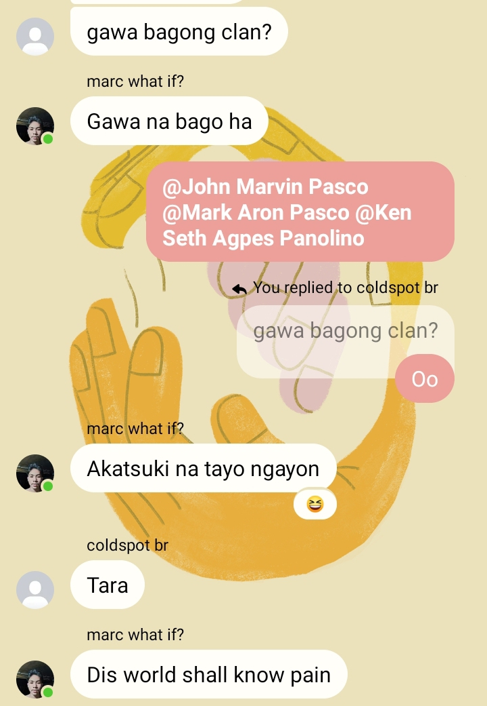
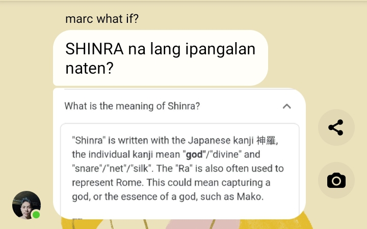

TASK FORCE 141
Marc Clarence Sangcap founded the 141 team, and the first two members were Brian Osorio and
John Marvin Pasco. He founded it when they were in the PYB clan. They added Michael Ivan,
Reynald Gayanes, and Andrei Marvilla because they were members of PYB, but they didn't have a team.
And as the days went by, they found new members such as Ken Seth Panolino, Gin Rayo,
and Mark Aron Pasco. Ken Seth was the cousin of Shimae Palla from the 69 team,
while Mark Aron Pasco is John Marvin's brother. Gin Rayo (the Stalkers Team Captain) was a
random player met by Marc Clarence and John Marvin when they were playing Battle Royale. Luckily,
Gin Rayo didn't have a clan or a team that day, so they had a chance to invite him to their team.
As time goes on, they have added new members such as Ceege Rosimo, Joshua Gutierrez, Jerome Gutierrez,
and Lemuel Osden. Ceege Rosimo, Lemuel Osden, and Joshua Gutierrez are Brian Osorio's friends,
while Jerome Gutierrez is Joshua's cousin. They also added Mark Keenjie. Mark Keenjie is from the 420 team,
but sadly, his teammates are not cooperating with each other, so they decided to disband it. When the time
came for the clan master to merge with another clan, the members of PYB and ERROR had a big
misunderstanding, resulting in 141 members leaving the PYB clan.

Marc Clarence, Brian Osorio, and John Marvin along with Mark Aron Pasco, Ken Seth, Gin Rayo and
Joshua Gutierrez decided to create a new clan, which is now Shinra Esports. They create shinra esports in
order to meet new people and make new memories. While the shinra is growing, Brian Osorio adds
his friend from the game Mobile Legends, Nala Deva Cervantes; Joshua also adds
his cousin, Jan Vincent Gutierrez; and Gin Rayo adds his siblings, Delgen Rayo and Angel Rayo.
He also adds his friends, such as Maoie De Guzman, Elai, and Jay Dizon. They added Gabriel Villanueva,
Janwin Tuazon, and Johnlei Calivo.